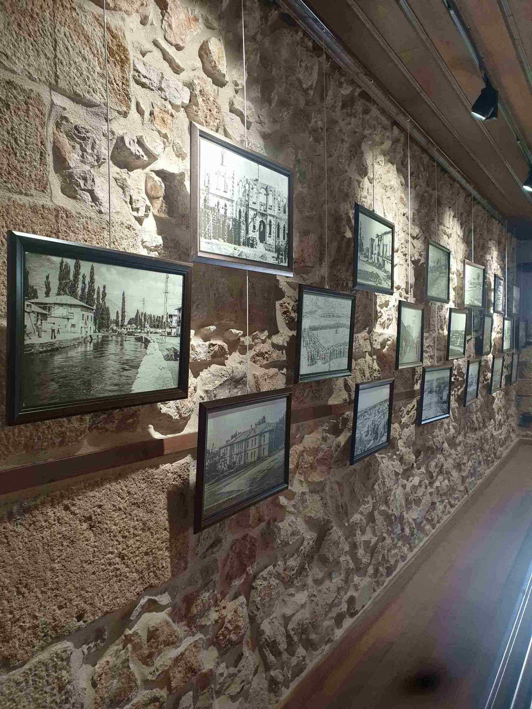

Şehirler
|
KAHRAMANMARAŞ |
 |
Kahramanmaraş Arkeoloji Müzesi
Kahramanmaraş’ta ilk müze 1947 yılında Taş Medresede kurulmuş, 1961 yılında Kahramanmaraş Kalesi’ne, 1975 yılında ise İl Merkezi Azerbaycan Bulvarı’nda bulunan bugünkü mevcut müze binasına taşınmıştır.1976 yılında şimdiki yerinde ziyarete açılan müze, zaman içerisinde ihtiyaca cevap vermediğinden yeniden projelendirilerek ve ek yapılarak 2012 yılında yeni teşhir tanzimi ile ziyarete açılmıştır.
|
|  |
Elbistan Müzesi
Elbistan Kaymakamı Osman Bey (Kör Osman) tarafından 1926 yılında inşası başlatılan Hükümet Konağı binası, Cumhuriyet Dönemi’nde Elbistan’da inşa edilen ilk kamu yapısıdır. 1930 yılının sonunda dönem kaymakamı Gani Bey tarafindan tamamlanarak hizmete açılan yapı, 1985’e kadar hem Hükümet Konağı hem de Adliye binası olarak hizmet vermiştir.
|
 |
Germanicia Mozaikli Alanı
İlimiz Dulkadiroğlu ilçesinde; Şeyhadil, Bağlarbaşı, Namıkkemal ve Dulkadiroğlu Mahallelerini kapsayan ve Müze Müdürlüğü tarafından yapılan kazılar ve araştırmalar sonucu Germanicia Antik Kenti olduğu anlaşılan kent bulunmaktadır. Maraş, Roma Dönemi’nde Romalıların egemenliği altına girmiştir ve şehri alan Roma Komutanı, iktidarda bulunan Roma İmparatoru Gaius Caesar Germanicus (Caligula) onuruna şehre Germanicia adını vermiştir.
|
 |
Tematik Mutfak Müzesi
Kahramanmaraş’ın tarihi konaklarının en nadide örneklerinden bir tanesinde, 2018 yılından itibaren Dulkadiroğlu Tematik Mutfak Müzesi ev sahipliği yapıyor, misafirlerini ağırlıyor.Tarihi Demirciler Çarşısı’ndan mutfak müzesine doğru adımlarken, çekiç ve çarkların yüzlerce yıldır susmayan ahenkli sesleri kulağınızın pasını alacaktır. Dar bir sokağın ucunda saklambaç oynayan bir çocuk gibi kapısının önüne gidene kadar kendini size göstermeyen konağın avlusuna adım attığınızda karşılaşacağınız taş ve ahşabın uyumlu birlikteliği de gözlerinize hitap edecektir. |
|
|
|